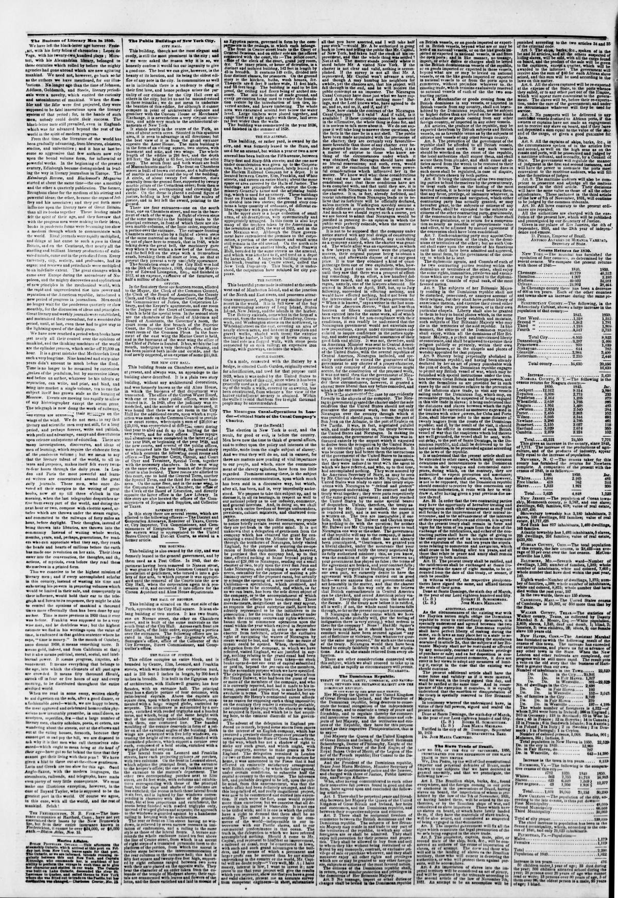

The Dominican Republic.
https://www.loc.gov/resource/sn83030313/1850-11-16/ed-1/?sp=2

See the original pageVer la página original
TREATY OF PEACE, COMMERCE AND NAVIGATION, BETWEEN HER BRITANNIC MAJESTY AND THE DOMINICAN REPUBLIC.
IN THE NAME OF THE MOST HOLY TRINITY.
Her Majesty the Queen of the United Kingdom of Great Britain and Ireland, and the President of the Dominican republic, being desirous to maintain and strengthen the relations of friendship, and to secure and extend the commercial intercourse between their respective dominions and territories, have resolved to conclude a treaty of peace, commerce and navigation, and have named as their respective Plenipotentiaries, that is to say:
Her Majesty the Queen of the United Kingdom of Great Britain and Ireland, Sir Robert Hermann Schomburgk, Doctor of Philosophy, Knight of the Royal Prussian Order of the Red Eagle, of the Royal Saxon Order of Merit, of the Legion of Honor of the French Republic, her Consul to the Dominican republic;
And the President of the Dominican republic, Senor Jose Maria Medrano, Minister Secretary of State for the Department of Grace and Justice, Public Instruction, and Foreign Affairs;
Who, after having communicated to each other their respective full powers, found in good and due form, have agreed upon and concluded the following articles:—
Art. 1. There shall be perpetual peace and friendship between her Majesty the Queen of the United Kingdom of Great Britain and Ireland, her heirs and successors, and the Dominican republic, and between their respective subjects and Citizens.
Art. 2. There shall be reciprocal freedom of commerce between the British dominions and the Dominican republic. The subjects of her Britannic Majesty may reside in and trade to any part of the territories of the republic, to which any other foreigners are or shall be admitted. They shall enjoy full protection for their persons and properties. They shall be allowed to buy from and sell to whom they like without being restrained or affected by any monopoly, contract, or exclusive privilege of sale or purchase whatever; and as her disposition is, moreover, enjoy all other rights and privileges which are or may be granted to any other foreigners, subjects or citizens of the most favored nation.
Art. 3. No tonnage, import or other duties or charges shall be levied in the Dominican republic on British vessels, or on goods imported or exported in British vessels, beyond what are or may be levied on national vessels, or on the goods imported or exported in national vessels, to and from the open ports; and, in like manner, no tonnage, import, or other duties or charges shall be levied in the British dominions on vessels of the republic, or on goods imported or exported in those vessels, beyond what are or may be levied on national vessels, or on the like goods imported or exported in national vessels to or from the ports open to commerce, without prejudice whatever to the stipulations contained in the fifth article with regard to national vessels of each of the two contracting parties.
Art 4 Merchandise or goods coming from the British dominions or any other foreign country in British vessels from any country, shall not be subjected in the Dominican republic, to other or to higher duties than are levied on the same kinds of merchandise or goods, coming from any other foreign country, or imported in any other vessels.
Art 5. Goods, the produce of the republic, when exported therefrom by British subjects and British vessels, or to British ports, shall not be subjected to higher duties than are levied on the same kinds of goods when exported in Dominican vessels or the vessels and citizens of any other foreign country.
Art 6. The protection of the government of the republic shall be afforded to all British vessels, their officers and crews, in case any wreck should be wrecked on the coast of the republic, the local authorities of the place shall use their utmost endeavors to save the property, and protect it from plunder, and shall cause all articles saved to be delivered up to their respective lawful owners. The amount of salvage dues in such cases shall, if a dispute arise, be settled by arbitrators chosen by both parties.
Art 7. Furthermore, the two contracting parties bind to themselves by the present treaty, that if either grant to any foreign or the most favored nation, it is hereby agreed between them, that the favors, privileges, or immunities in matters of commerce and navigation, which either contracting party may hereafter grant, to the subjects or citizens of any other state, shall be extended to the subjects or citizens of the other contracting party, gratuitously, if the concession in favor of that other state shall have been gratuitous, or in return for a compensation equal as possible in effectiveness, value and effect, to be adjusted by mutual agreement if the concession shall have been conditional.
Art 7. Each contracting party may appoint Consuls for the protection of trade, to reside in the dominions or territories of the other; but no such Consul shall enter upon the exercise of his functions until he shall have been admitted and approved, in the usual form, by the government of the country to which he is sent.
The commerce, navigation and subjects of each of the two contracting parties residing within the territories or dominions of the other, shall enjoy the same rights, immunities, privileges and exemptions, which are or may be granted to the diplomatic agents or Consuls of equal rank, of the most favored nation.
Art 8. The subjects of her Britannic Majesty residing in the Dominican republic shall not be disturbed, persecuted, or annoyed on account of their religion, or their religious worship, but in conscience therein, and exercise their creed either within their own domestic dwellings, or in the particular chapels. Liberty shall also be granted to bury the subjects of her Britannic Majesty who may die within the Dominican republic, in the manner, they may freely establish and maintain, in convenient places, which for that purpose they may set apart, in any part of the Dominican republic in the territories of the said republic. In like manner, the citizens of the Dominican republic shall enjoy, within all the dominions of Her Britannic Majesty, a full and exact freedom of conscience, and shall be allowed to exercise their religion publicly or privately, within their own dwelling houses, or in the chapels and places of worship appointed for that purpose.
Art 9. Slavery being perpetually abolished in the Dominican republic, and having been recently declared by her an act of piracy punishable with the pain of death, the Dominican republic engages to permit any British vessel of war, which may be furnished with special instructions, to search any Dominican vessel which may be suspected of being engaged in this vile trade in human beings; and the distances and places between which the right of search may be exercised, shall be governed by the treaties with other powers, for Cuba and Porto Rico, within the distance of twenty leagues from the coasts of the Dominican republic. In case it should appear to the officer in command of such British vessel of war, that the suspicions of his being engaged are well grounded, the vessel shall be sent, without delay, to the port of Santo Domingo, in the Dominican republic, and shall be delivered up to the Dominican authorities to be tried according to the laws of the republic.
It is understood that the present article shall not be extended to other cases, which might occasion vexatious search of Dominican merchant vessels in their voyages and commercial enterprise; but for preventing all abuse, the officers authorized to expect protection and assistance; and if, in the case of such search, it should turn out not to be as supposed, that the Dominican republic should suffer any damage from such search or vexatious molestation, it rests with her to withdraw the concession made in the present article, or to modify it.
Art 10. In order that the two contracting parties may have the opportunity of thereafter treating and agreeing upon any other terms which may be useful to their commercial relations, and to give greater stability to the present treaty, the contracting parties shall have the right of giving to each other notice of their intention to modify it at the expiration of said ten years the stipulations of the present treaty relative to commerce and navigation shall cease to be binding after ten years, and all the terms of peace and friendship shall remain obligatory to both nations.
Art 11. The present treaty shall be ratified, and the ratifications shall be exchanged at Santo Domingo within twelve months from the date of this treaty, or sooner, if possible.
In witness whereof, the respective plenipotentiaries have signed the same, and affixed thereto the seals of their arms.
Done at Santo Domingo, the sixth day of March, in the year of our Lord eighteen hundred and fifty.
(L. S.) ROBERT H. SCHOMBURGK.
(L. S.) JOSE MARIA MEDRANO.
ADDITIONAL ARTICLES.
As the citizens of the Dominican republic and of the Haytian nation might oblige the Dominican republic to modify the stipulations of article 2, it is specially understood and agreed between the two contracting parties, that the Dominican republic shall have perfect liberty of making the duration of the 2d article shorter than ten years, or to reduce the defence, notwithstanding the stipulations of article 2; provided that the subjects of her Britannic Majesty shall not be restricted or affected by any monopoly, contract or exclusive privilege of purchase or sale; and as her disposition is consistent, to permit any foreign merchant or trader to enter in her views to adopt any measures of limitation, except in the case that Haytians should also continue.
The present additional article shall have the same force and validity as if it were inserted, word for word, in the treaty signed this day. It shall be ratified at the same time. And in case Hayti should resume or continue, it is understood that the sanction or disapprobation of the present article by either of the two contracting parties shall not affect the validity of the main treaty.
In testimony whereof the undersigned have, in virtue of their full powers, signed and sealed the present article.
Done at Santo Domingo, the sixth day of March, in the year of our Lord eighteen hundred and fifty.
(L. S) ROBERT H. SCHOMBURGK.
(L. S.) JOSE MARIA MEDRANO.
Ratified in the city of St. Domingo, September 10, 1850.
BUENAVENTURA BAEZ.
Dr. JOSE MARIA CAMINERO.
How to cite this articleCómo citar este artículo
The New York Herald. (1850). New York [N.Y.], November 16, 185016 de noviembre de 1850. DR in the American PressRD en la Prensa Norteamericana. Library of Congress, Chronicling America: https://www.loc.gov/resource/sn83030313/1850-11-16/ed-1/?sp=2
ReferencesReferencias
Library of Congress, Chronicling America: The New York Herald, November 16, 185016 de noviembre de 1850.
Send an observationEnviar una observación
Does this article connect with your family, your town, or something you know? Did we get something wrong? Write to us. Observations go to the editor's inbox and are read by a person.¿Este artículo conecta con su familia, su pueblo o algo que usted conoce? ¿Nos equivocamos en algo? Escríbanos. Las observaciones llegan al buzón del editor y las lee una persona.
Send observationEnviar observación